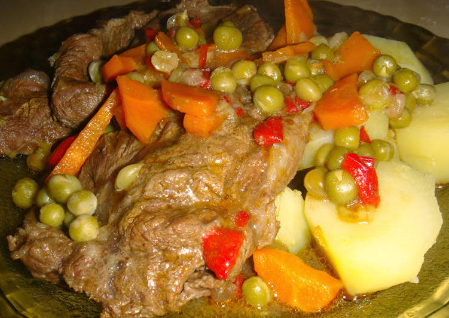

Bifes a la criolla
27/07/2018, Argentinisima 
Los tradicionales bifes a la criolla, sanos fáciles y sabrosos, además van acompañados de verduras lo que hacen un plato muy completo. Los Ingredientes son: 4 cdas aceite de girasol o de oliva, 700 g bife de nalga, 2 papas medianas, 200 g zanahorias, 1 morrón rojo, 100 g arvejas congeladas, 400 g cebolla, 2 dientes ajo, 2 hojas laurel, 500 g papas, a gusto sal y pimienta.
Pelar y picar la cebolla. Picar muy fino el ajo. Pelar y cortar la zanahoria en rodajas finas. Limpiar el morrón de nervaduras, semillas y el cabo y luego cortar en tiras de 1/2 cm, reservar. Lavar bien las papas para poder cocerlas con cáscara. Cortarlas en rodajas de 1/2 cm. Reservar. Salpimentar los bifes y poner el ajo picado por toda su superficie. En una olla mediana, cubrir la base con aceite. Poner una capa de cebolla y una capa de bifes. Mezclar todas las verduritas menos las arvejas y poner una capa de verduras, una de bifes. Salar las verduras. Terminar con una capa de verduras. No olvidar poner las dos hojitas de laurel. Poner la olla a fuego bajo y tapar. Cocinar por 1 hora y media. Luego agregar las arvejitas.
¡Disfruta de este sabroso plato argentino!